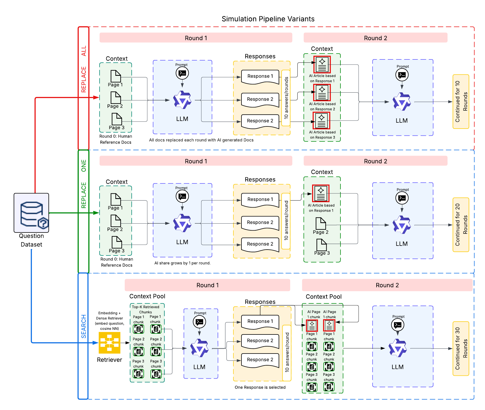
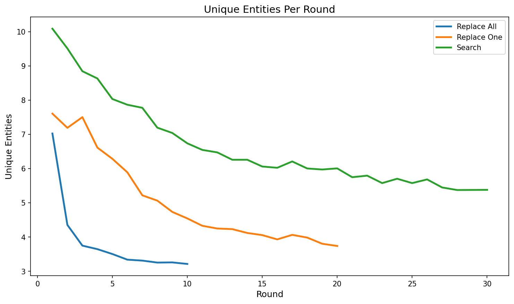
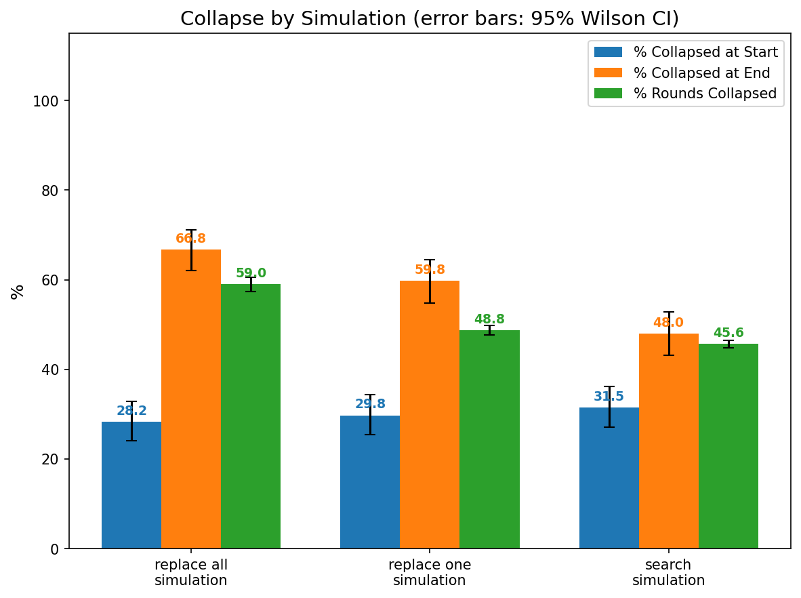
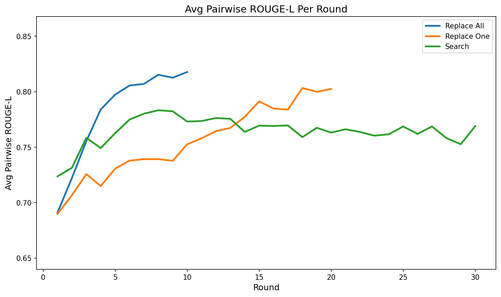
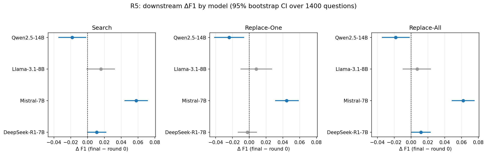
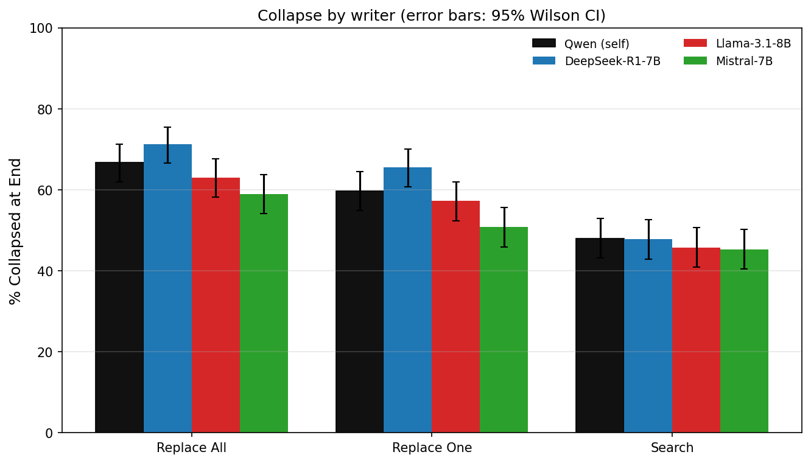
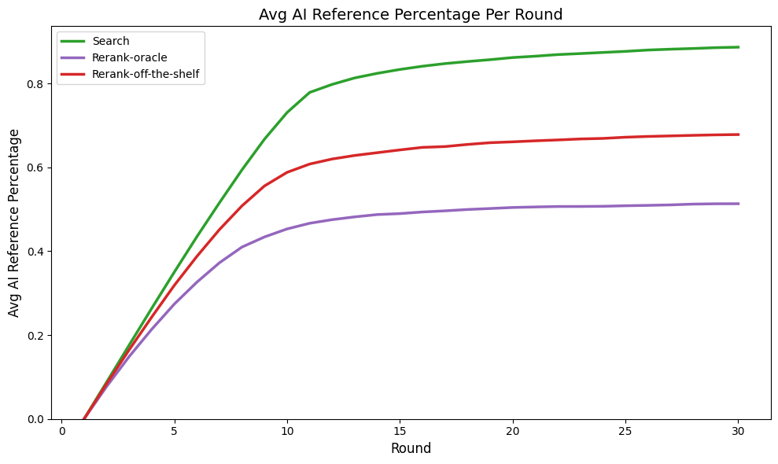
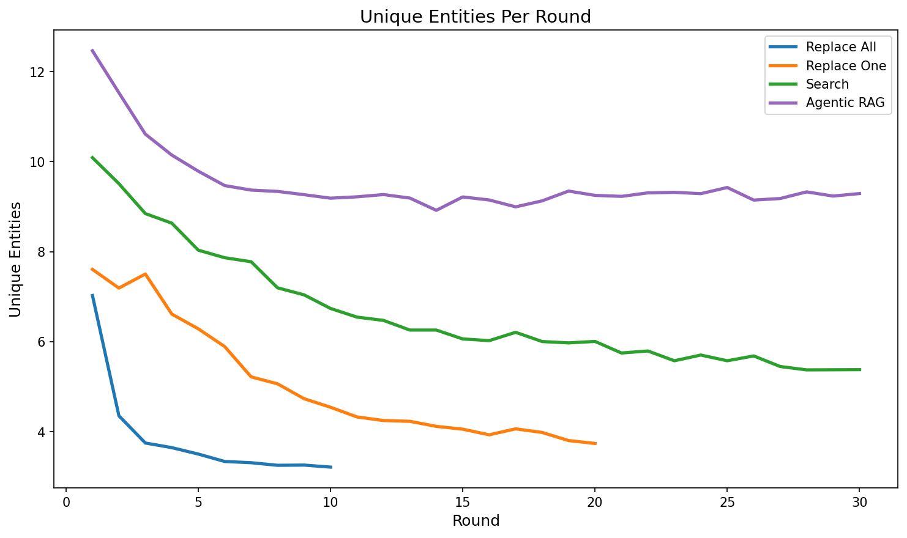

Collapse at inference time, with no retraining
AI-generated text now constitutes a substantial and growing fraction of indexed web content, creating a feedback loop in which AI assistants may retrieve and condition on their own prior generations. Prior work shows that recursive training on model generations causes model collapse: a loss of output diversity and distributional drift. We ask whether a similar collapse emerges at inference time, when LLMs retrieve their own generations via RAG without any parameter updates.
We measure collapse as the progressive convergence of responses to a narrow set across recursive retrieval rounds. Across three contamination simulations and four open-source LLMs, collapse is rapid and consistent under direct contamination, but partial and model-dependent under competitive retrieval. Collapse can also degrade downstream accuracy on factual multi-hop QA, though the effect is inconsistent across models. We further show that the self-generated documents we introduce are cited far above their share of the context, an effect that is not fully explained by document quality, writing style, AI authorship, or self-preference. Finally, we propose and evaluate mitigation strategies at both the retrieval and generation stages, none of which reliably prevent collapse. As AI-generated content continues to populate the open web, collapse-resistant retrieval design is necessary for trustworthy AI assistants.
What we found
Collapse is fast under direct contamination
of entity-comparison questions are fully collapsed by the final round under Replace-All (Qwen2.5-14B-Instruct), up from 28.2% at the start.
Self-generated references are over-cited
At round 1 they are 12.0% of the context but receive 26.5% of citations under Replace-One.
Accuracy effects depend on the model
On HotpotQA only Qwen2.5-14B-Instruct declines significantly; Mistral-7B-Instruct-v0.3 improves as answers converge on a consensus.
No mitigation reliably prevents it
Paraphrasing and agentic retrieval slow collapse, re-ranking is not effective, and GEPA prompt optimization did not beat the baseline.
A recursive retrieval loop
Each round, the model retrieves documents, answers the question 10 times, and its answers are rewritten into web-style articles (by Qwen2.5-7B-Instruct) that re-enter the retrieval pool. Questions are simulated independently, following the design of Druck and Smith (2026).
Datasets
400 non-factoid entity-comparison questions (e.g. “What are the best restaurants in the Bay Area?”) and the first 1400 HotpotQA dev questions.
Models
Qwen2.5-14B-Instruct, Mistral-7B-Instruct-v0.3, Llama-3.1-8B-Instruct and DeepSeek-R1-Distill-Qwen-7B, all at temperature 0.7.
Metrics
Pairwise ROUGE-L, unique entities, collapse rate (every response mentions the same set of canonical entities), and token-level F1 on HotpotQA.
Answers converge as the context fills with AI text



With Qwen2.5-14B-Instruct, unique entities fall and responses grow more similar as the context becomes AI-generated. Collapse is rapid and consistent under direct contamination (Replace-All, Replace-One), but partial under competitive retrieval (Search), even though Search runs for 30 rounds versus 10 and 20.
| Simulation | Collapsed at start | Collapsed at end | 95% Wilson CI |
|---|---|---|---|
| Replace-All | 28.2% | 66.8% | [62.0, 71.2] |
| Replace-One | 29.8% | 59.8% | [54.9, 64.4] |
| Search | 31.5% | 48.0% | [43.1, 52.9] |
The same pattern holds for Llama-3.1-8B, Mistral-7B and DeepSeek-R1-7B, most clearly under direct contamination.
HotpotQA: the accuracy effect depends on the model
HotpotQA answers are short factual spans, so response diversity is low to begin with and there is little room for collapse to cause an accuracy drop.
| ΔF1 (first → final round) | Replace-All | Replace-One | Search |
|---|---|---|---|
| Qwen2.5-14B | −0.018 | −0.024 | −0.018 |
| Mistral-7B | +0.062 | +0.044 | +0.058 |
| Llama-3.1-8B | +0.007 | +0.008 | +0.016 |
| DeepSeek-R1-7B | +0.012 | −0.002 | +0.011 |
Orange: significant decline. Green: significant improvement. Grey: 95% bootstrap CI (over 1400 questions) includes zero. Mistral's gain is consistent with collapse onto a consensus answer that raises token overlap for a low-baseline model; with 1400 questions the nulls are small effects, not a lack of statistical power.

What causes RAG collapse?
Evidence
Collapse begins before full contamination
Under Replace-One, unique words fall from 64.0 to 51.3 between rounds 1 and 9, while roughly half of the context is still original references.
Self-generated references are over-cited
At round 1 they are 12.0% of the context but receive 26.5% of citations under Replace-One (ratio 2.2), and 14.8% vs 24.0% under Search (ratio 1.6). A reference is credited only when regenerating the answer without it changes the answer. The effect survives a query-alignment control and replicates across all four models and the agentic setting.
Ruled-out explanations
AI authorship
About 30% of the original references are themselves AI-written (GPTZero), yet they are cited far less than self-generated ones.
Writing style
Paraphrasing the original references into AI style before round 1 slows collapse but does not stop it: stylistic uniformity accelerates collapse but is not its sole cause.
Reference quality
Among references scored 5/5 on directness, organization and relevance, self-generated ones are still cited 2.1× as often. Controlling for eight quality dimensions, the self-generation effect is +0.154 (p < 0.001).
Self-preference
When the fed-back documents are built from a different model's answers, collapse persists at a rate statistically indistinguishable from Qwen's own answers.

Collapse is robust to every mitigation we tried
Re-ranking
Penalize likely-AI documents between retrieval and generation:
Even with an oracle detector it fails, because re-ranking can only reorder what retrieval returns. By the final round the oracle retrieves on average only one original document out of ten.

Agentic RAG
Ends at 27.2% collapsed vs 48.0–66.8% for the baselines, but it also starts much lower (7.2%) and makes about 1.01 tool calls per round, so we can't attribute the gain to iterative retrieval rather than its richer system prompt. Promising, but prompt-sensitive.
Paraphrasing & GEPA
Paraphrasing slows recursive self-reinforcement without preventing it. GEPA prompt optimization converged immediately: no candidate improved on the baseline prompt.

BibTeX
@inproceedings{senapati2026ragcollapse,
title = {Does Retrieval Augmented Generation Collapse When It Retrieves AI-Generated Documents?},
author = {Senapati, Riddhimaan and Druck, Gregory and Fatima, Fabeha and Yilmazel, Ozel and Rastogi, Rati and Zeng, Chang and Smith, Ethan},
booktitle = {Proceedings of the Grounding Language Models (GroundLM) Workshop at EMNLP 2026},
year = {2026},
url = {https://github.com/rag-collapse/RAG-Collapse}
}